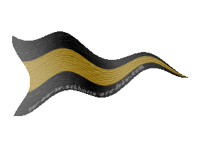
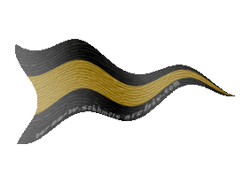

| Übersicht,
Anschläge und Stammtisch (RPG) |
|
Bund der Ehe
|
| Dr. Nightmare (RIP) |
Zur 20. Stunde am 76. Erntemond im Jahre 415 habe ich Dinanoonwen eine Antrag gestellt und sie hat ihn zu meinen großen Glück angenommen.
Ich möchte hiermit ALLE Einladen zur 10. Stunde am 12. Dunkelfrost (Donnerstag 22.04 um 20 Uhr) unserer Hochzeit beizuwohnen.
Stattfinden wird diese in Lager Süd auf der Hafeninsel.
Trauen wird uns Pheronpriester Fáin Senémis.
Ich hoffe auf zahltriches Erscheinen von Freunden, Nationsmitgliedern, Verwandten und allen anderen die Interesse an unserer Hochzeit habe.
Ein glücklicher,
Khazar Darlon
Zur 3. Stunde am 77.Erntemond im Jahre 415 |
19.04.04 0:17
 |
|
| Miluiverion Balaneth (RIP) |
*Gratuliere*
Wünsche euch viel glück in eurer ehe und alles gute wenn es mein zeitplan zu lässt werde ich vorbei kommen und euch persöhnlich noch mal meine glückwünsche überreichen!
Baron Miluiverion Balaneth,
Vorsteher von Miluiverien
Zur 3. Stunde am 77.Erntemond im Jahre 415 |
19.04.04 0:19
|
|
| Ylva Muriell Laoghaire (RIP) |
Ich gratuliere euch zu eurem glück
Lady Ylva Muriell Laoghaire,
Vorsteherin von Seyda Neen
Zur 3. Stunde am 77.Erntemond im Jahre 415 |
19.04.04 0:21
|
|
| Kedek Feuerbart (RIP) |
Möge euer Bund euch beiden ewiges Glück verheissen.
Sir Goffanon der Schmied,
Anführer der glorreichen Nation "Turris Fortis"
Zur 8. Stunde am 77.Erntemond im Jahre 415 |
19.04.04 1:29
|
|
| Fáin Cortez (RIP) |
Hehe, dann muss ich mich ja mal vorbereiten *lächelt*
Aber gratulation zum erfolgreichen Antrag *grins*
Wir sehen uns dort lieber Khazar und liebe Dinanoonwen!
In Freundschaft,
Sir Fáin Senémis,
Vorsteher von Esturia d`Oro,
Priester im Dienste des einzig wahren Glaubens an Pheron,
Innenminister der Ritter Esturiens,
Ehemann der reizenden Valeska Senémis
Zur 11. Stunde am 77.Erntemond im Jahre 415 |
19.04.04 2:16
|
|
| Nherin von dem Glutwindclan (RIP) |
Viel Erfolg und Lebensglück zusammen, beste Gesundheit und viele Kinder, die tapfer wie Khazar Darlon und schön wie Dinanoonwen sein mögen.
Eine flüchtige Freundin
Nherin von dem Glutwindclan
Zur 22. Stunde am 77.Erntemond im Jahre 415 |
19.04.04 4:40
|
|
| Jamari Dinuriel (RIP) |
*tritt an das Anschlagsbrett*
Ich wünsche euch nur das beste und mögen die 7 euch geleiten.
*tritt lächelnd daovn*
Jamari
Zur 14. Stunde am 78.Erntemond im Jahre 415 |
19.04.04 8:24
|
|
| phlebiac (RIP) |
Möge Bendur eure Verbingung segnen.
phlebiac,
Vorsteher von Numenor,
Kardinal im Dienste des einzig wahren Glaubens an Bendur,
Admiral der Seefahrt
Zur 16. Stunde am 78.Erntemond im Jahre 415 |
19.04.04 9:01
|
|
| Frerin Orclegs (RIP) |
Ich wünsche Euch alles Gute und Glück der Scherbe auf Eurem weiteren gemeinsamen Weg.
Frerin Orclegs
Zur 17. Stunde am 78.Erntemond im Jahre 415 |
19.04.04 9:18
|
|
| Sam Selachii (RIP) |
Bald stoßen alle freudig an
Auf diese Braut und ihren Mann
Ihr Bund sei fest, ihr Glück sei groß
Die Kinder zahlreich- darauf Prost!
Alles Gute und viel Glück auf Euerem gemeinsamen "Lebensabschnitt".
Sir Sam Selachii,
Vorsteher von Clouds End,
Ratsmitglied und Handelsimperator der HdL
Zur 22. Stunde am 78.Erntemond im Jahre 415 |
19.04.04 10:15
|
|
| Ilidan Darkelf (RIP) |
Viel Glück dem neuen Paar, möge diese Bindung ewig halten und ein reicher Kindersegen die Scherbe beglücken.
Ilidan Darkelf
Zur 7. Stunde am 79.Erntemond im Jahre 415 |
19.04.04 12:23
|
|
| Aleya Sophija (RIP) |
Es freut mich sehr für meinen Freund das er sein Glück gefunden hat !!
Und auch du Dina wirst in ihm einen wundervollen Mann und Begleiter haben !
Alles Glück der Scherbe wünsche ich Euch !
Lady Aleya Sophija,
Vorsteherin von Esturia Nova
Zur 10. Stunde am 79.Erntemond im Jahre 415 |
19.04.04 13:04
|
|
| Ardán Schwarzauge (RIP) |
Meine allerherzlichsten Glückwünsche! Möge dieser Bund mit vielen Kindern und nochmehr Liebe gesegnet sein!
Sir Ardán Fálmanôr von Nerôná,
Vorsteher von Dîn Nerôná,
Mitglied des Hohen Rates und Gesandter der Stille
Zur 12. Stunde am 79.Erntemond im Jahre 415 |
19.04.04 13:31
|
|
| Caledor McMulenberc (RIP) |
Grats auch von mir ,dass sich wieder zwei Menschen gefunden haben
Little Kai von Fidelitas
Zur 15. Stunde am 79.Erntemond im Jahre 415 |
19.04.04 14:16
|
|
| Nerin Stormteeth (RIP) |
Werter Khazar Darlon, wir haben uns ja schon unterhalten und ich bin überzeugt, dass Dinanoonwen ihr Glück in euch gefunden hat und ihr alles für sie tun werdet. Es freut mich das ihr es seid, der ihr Mann werden wird.
Liebe Dina, pass auch du auf deinen zukünftigen Mann auf. Er ist es wert. Ich wünsche dir alles Glück der Erde und vergiss deinen Lehnsherren nicht. Es freut mich das du dein glück gefunden hast.
Ich werde natürlich auf der Hochzeit erscheinen, da mir zugesichert wurde, dass ausreichen Zwergenbier bereitstehen wird.
Möge Urvan über eure Ehe Wachen!
Baron Nerin Stormteeth,
Anführer der glorreichen Nation "Hüter des Lichts",
"Axt Urvans" - Krieger im Dienste Urvans
Zur 16. Stunde am 79.Erntemond im Jahre 415 |
19.04.04 14:28
|
|
| Landstreicher (RIP) |
Meinen Glückwunsch und die besten Wünsche.
Landstreicher
Zur 19. Stunde am 79.Erntemond im Jahre 415 |
19.04.04 15:17
|
|
| Monsterbacke (RIP) |
auch meine herzlichen glückwünsche an das brautpaar
Monsterbacke
Zur 12. Stunde am 80.Erntemond im Jahre 415 |
19.04.04 19:16
|
|
| Kinggidora (RIP) |
Auch von mir nochmal beste Glückwünsche, möge eure Liebe die Ewigkeit überdauern!
gez.
Caladryel Minaith,
Stellv. Nationsführer der Ritter Esturiens
Zur 19. Stunde am 80.Erntemond im Jahre 415 |
19.04.04 20:53
|
|
| Mellefont Banain (RIP) |
Meine Glückwünsche an das junge Paar, mögt ihr den Rest eures Lebens gemeinsam und glücklich verbringen.
Mellefont Banain,
Vorsteher von Neo Fendrakan,
Wirtschaftskoordinator
Zur 13. Stunde am 81.Erntemond im Jahre 415 |
20.04.04 1:07
|
|
| Dagorineth (RIP) |
Auch ich möchte Euch meine herzlichsten Glückwünsche mit auf den Weg geben.
Möget ihr glücklich zusammen werden und stets im Schutze der Sieben wandeln.
Liebe Grüße,
Dagorineth,
Diplomatin des Ordens der Paladine
Zur 17. Stunde am 81.Erntemond im Jahre 415 |
20.04.04 2:04
|
|
Nemetes Ar-Faêníel
   |
Es sei in einem langen Leben
das junge Paar von Glück umgeben.
Was immer in der Welt geschehe:
Stets liebevoll sei Eure Ehe!
Nach Glückwunsch ist mir sehr zumute:
Dem künftigen Paare alles Gute!
Es grüßt Euch herzlich,
Tessi
Nemetes
Zur 13. Stunde am 82.Erntemond im Jahre 415 |
20.04.04 6:41
|
|
| Dinanoonwen (RIP) |
Habt dank, für die vielen lieben Wünsche.
Ich freue mich, den ein oder anderen heute abend zu sehen und hoffe auf ein zahlreiches Erscheinen....
Gruß
Dinanoonwen,
Vorsteherin von Tanelorn,
Ratsmitglied und Geschichtschreiberin der HdL
Zur 13. Stunde am 2.Dunkelfrost im Jahre 415 |
22.04.04 14:38
|
|
| Brendan (RIP) |
*liest den anschlag und bemerkt bitter, dass er keine einladung bekommen hat*
Sir Brendan,
Vorsteher von Schädelfels
Zur 13. Stunde am 2.Dunkelfrost im Jahre 415 |
22.04.04 14:41
|
|
| seth béliar (RIP) |
Ich wünsche euch alles Gute.
Gollor,
Priester im Dienste des einzig wahren Glaubens an Pheron
Zur 14. Stunde am 2.Dunkelfrost im Jahre 415 |
22.04.04 14:51
|
|
| Fenwae (RIP) |
Meinen herzlichen Glückwunsch zu Eurem Glück. Möge Pheron über Euren gemeinsamen Weg wachen.
Werter Brendan, diese Einladung ging an alle, so steht es jedenfalls geschrieben. Daher kein Grund zur Bitterkeit. An so einem wundervollen Tage ist doch nur ein Lächeln angebracht.
Fenwae,
Priesterin im Dienste des einzig wahren Glaubens an Pheron,
Erzkanzlerin des Ordens der Paladine
Zur 22. Stunde am 2.Dunkelfrost im Jahre 415 |
22.04.04 16:44
|
|
| mefilas (RIP) |
möge eure ehre ewig halten!
ihr gebt ein prächtiges paar ab!
auf euch!
*verlässt springend den anschlag und murmelt: "wann,, wann werde ich heiraten?"*
mefilas
Zur 22. Stunde am 2.Dunkelfrost im Jahre 415 |
22.04.04 16:49
|
|
| Dr. Nightmare (RIP) |
Heute zur 20. Stunde am 3. Dunkelfrost im Jahre 415 wurden Dinanoowen und ich, Khazar Darlon getraut.
Ich möchte mich an dieser Stelle bei allen Gästen bedanken.
Mögen die 7 über euch Wachen!
Ein glücklicher,
Khazar Darlon,
Ehemann der reizenden Dinanoonwen
Zur 20. Stunde am 3.Dunkelfrost im Jahre 415 |
22.04.04 21:52
|
|
| Fáin Cortez (RIP) |
Herzglichen Glückwunsch
Sir Fáin Senémis,
Vorsteher von Esturia d`Oro,
Priester im Dienste des einzig wahren Glaubens an Pheron,
Innenminister der Ritter Esturiens,
Ehemann der reizenden Valeska Senémis
Zur 20. Stunde am 3.Dunkelfrost im Jahre 415 |
22.04.04 21:53
|
|
| Dagorineth (RIP) |
Meine Glückwünsche an das frischvermählte Paar und Hochachtung an Fain, welcher die Trauung vollzogen hat.
Dagorineth,
Diplomatin des Ordens der Paladine
Zur 20. Stunde am 3.Dunkelfrost im Jahre 415 |
22.04.04 21:55
|
|
| Dinanoonwen (RIP) |
Auch ich möchte mich für das zahlreiche Erscheinen bedanken. Diesen Tag werde ich wohl immer in Erinnerung behalten.
Besonderen Dank an Fain, der seine Sache als Priester nicht hätte besser machen können.
Die 7 zum Gruße
Dinanoonwen,
Vorsteherin von Tanelorn,
Ratsmitglied und Geschichtschreiberin der HdL,
Ehefrau des ehrenwerten Khazar Darlon
Zur 20. Stunde am 3.Dunkelfrost im Jahre 415 |
22.04.04 21:57
|
|
| Rohezal (RIP) |
Salve,
Pheron mit euch.
Pax vobiscum,
Rohezal
Rohezal
Zur 20. Stunde am 3.Dunkelfrost im Jahre 415 |
22.04.04 21:57
|
|
| Monty McMariner (RIP) |
*schwankend an den Anschlag herantritt*
War einen sehr schöne Zeremonie, und die Feier danach erst ;)
Wünsch Euch beiden alles gute für die Zukunft!
*den Zettel anheftet und hicksend vondannen geht*
MfG
Sir Monty McMariner,
Anführer der glorreichen Nation "Breariach",
Earl of Moray Firth
Zur 21. Stunde am 3.Dunkelfrost im Jahre 415 |
22.04.04 22:02
|
|
| Monty McMariner (RIP) |
*zurück eilt*
achja, der Hand gehts übrigens prima Pastor Fain ;)
Sir Monty McMariner,
Anführer der glorreichen Nation "Breariach",
Earl of Moray Firth
Zur 21. Stunde am 3.Dunkelfrost im Jahre 415 |
22.04.04 22:04
|
|
| Fáin Cortez (RIP) |
*lacht* Wer zu viel sabbelt der bekommt pfeil in die hand *lacht*
Sir Fáin Senémis,
Vorsteher von Esturia d`Oro,
Priester im Dienste des einzig wahren Glaubens an Pheron,
Innenminister der Ritter Esturiens,
Ehemann der reizenden Valeska Senémis
Zur 22. Stunde am 3.Dunkelfrost im Jahre 415 |
22.04.04 22:29
|
|
| Aimee (RIP) |
Werter Khazar Darlon,
leider konnte ich bei der Trauungszeremonie nicht anwesend sein, doch wünsche ich euch und eurer Gattin das allerbeste. Wünsche euch Glück für die Zukunft und immerwährende Freude.
Aimee
Zur 9. Stunde am 4.Dunkelfrost im Jahre 415 |
23.04.04 1:01
|
|
| Gwendolyn (RIP) |
Liebe Schwester, werter Khazar,
ich wünsche Euch beiden alles Glück der Scherbe. Die Trauung war wunderschön...
Lady Gwendolyn,
Anführerin der glorreichen Nation "Freie Union Chaotischer Kumpel"
Zur 10. Stunde am 4.Dunkelfrost im Jahre 415 |
23.04.04 1:16
|
|
| Nalon din Adun (RIP) |
Ich bedanke mich für die Einladung und die Ehre zu dieser Hochzeit und der Feier danach eingeladen gewesen zu sein.
Wirklich sehr ergreifend und ähh feuchtfröhlich.
Meine besten Wünsche an das Paar, mögen die 7 ihnen wohlgesonnen sein und immer Sonne auf diese Verbindung scheinen.
Baron Nalon din Adun,
Vorsteher von Trucan,
Anführer der glorreichen Nation "Atha´an Miere",
Herr der Wogen der Atha´an Miere
Zur 12. Stunde am 6.Dunkelfrost im Jahre 415 |
23.04.04 12:55
|
|
| Kharas (RIP) |
Auch ich möchte meine Wünsche dem Brautpaar kundtun.
Es war eine wirklich schöne Hochzeit...
Möge eure Liebe ewig währen.
Freiherr Kharas,
Bewahrer ALVERANS
Zur 13. Stunde am 6.Dunkelfrost im Jahre 415 |
23.04.04 13:07
|
|
| Monty McMariner (RIP) |
*steht Stirnrunzelt vor dem Anschlag*
sabbeln?! Fain?! ich habe stillschweigen mit der Hand eine Gehste der Begrüssung getätigt *g*
Sir Monty McMariner,
Anführer der glorreichen Nation "Breariach",
Earl of Moray Firth
Zur 20. Stunde am 6.Dunkelfrost im Jahre 415 |
23.04.04 14:44
|
|
| Nolan aus dem Hause Tyrion (RIP) |
alles gute euch beiden!!
Nolan aus dem Hause Tyrion
Zur 20. Stunde am 7.Dunkelfrost im Jahre 415 |
23.04.04 20:21
|
|
| Murdock (RIP) |
Auch von mir alles Gute zur Hochzeit nachträglich! Möge Pheron Euch beschützen in guten, wie in schlechten Zeiten.
Grüsse,
Aratas,
Vorsteher von Asgards Gate
Zur 16. Stunde am 8.Dunkelfrost im Jahre 415 |
24.04.04 1:00
|
|
Übersicht,
Anschläge und Stammtisch (RPG)
|